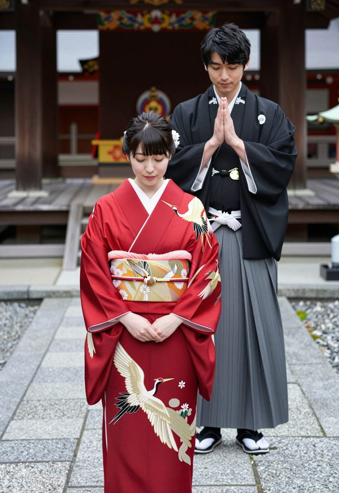
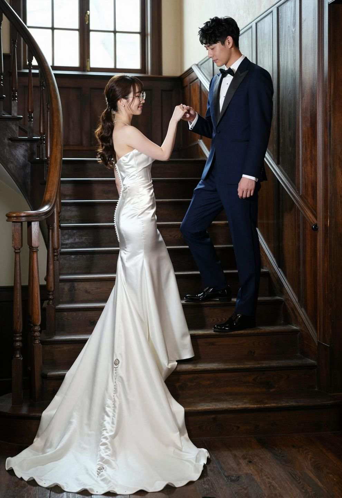
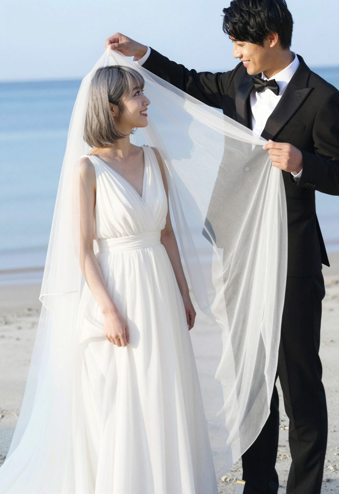
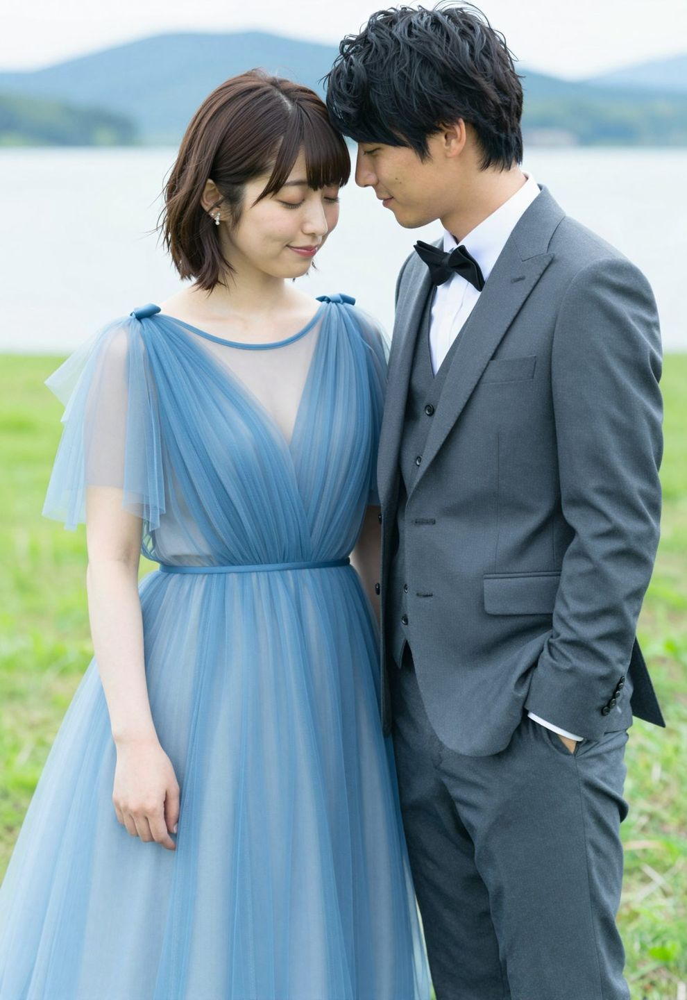
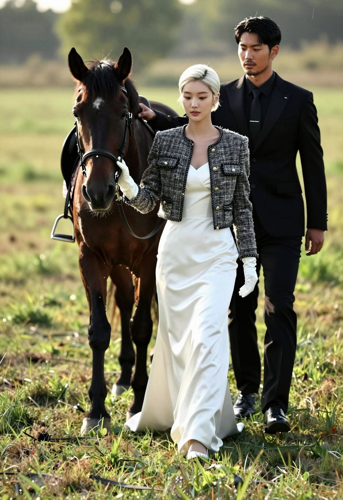
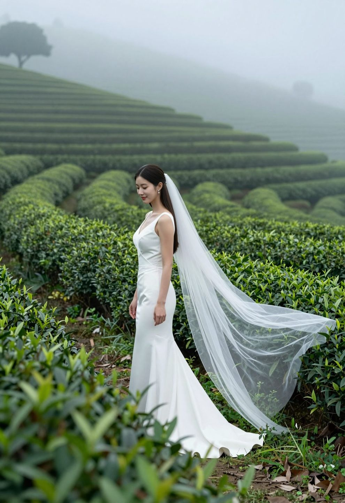
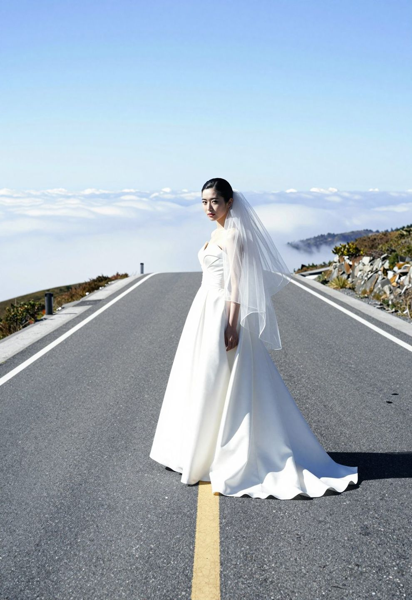
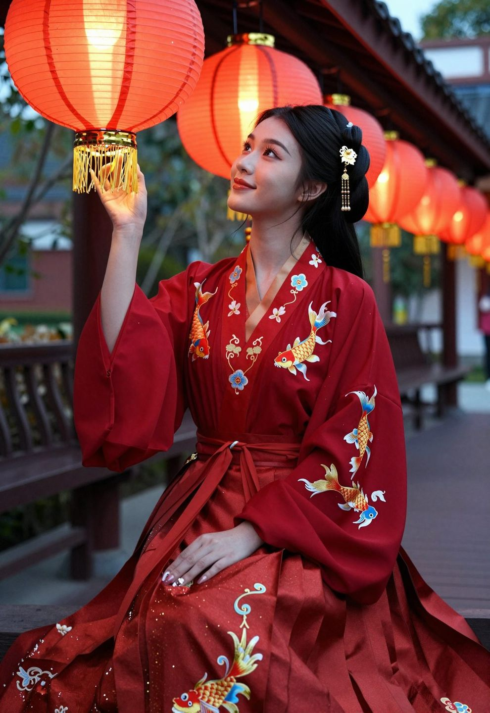

USE CASE 01 — ブライダル前撮り / アルバムの見本
写真は、本になって残る。
棚の様式で焼いた前撮りを、印刷のアルバムのレイアウトで。表紙、トレーシングペーパーの扉、裁ち落としの見開き、章扉、誓いの言葉——製本屋に渡す形そのままを、画面でめくれます。
30 × 30 cm · LAYFLAT18 SPREADS · 27 PHOTOS · 2 MOVING
和装 / 洋装 / 韓国風 / 台湾の婚紗 / 中華風
和装 / 洋装 / 韓国風 / 台湾の婚紗 / 中華風

THE WEDDING ALBUM
Before
the Day
the Day
前 撮 り
AUTUMN · 2026
∞
PRE-WEDDING
ふたりの、前の日
five stories in one book
和装 · 洋装 · 韓国風 · 台湾の婚紗 · 中華風
和装 · 洋装 · 韓国風 · 台湾の婚紗 · 中華風

Shrine参拝 · 社殿の前
01I
和 装
Shiromuku & Iro-uchikake
白無垢と色打掛。
鳥居の参道、手水舎、紅葉の庭。
静かな所作を、静かな光で。
鳥居の参道、手水舎、紅葉の庭。
静かな所作を、静かな光で。
Red umbrella for two和傘の相合傘 · 紅葉の庭
A walk under the blossomsお散歩 · 桜の庭
Escortエスコート · 苔の石段
05A formal greeting正座でご挨拶 · 五重塔
06The bride, in autumn新婦ソロ · 紅葉の庭

The grand staircase階段 · 洋館のホール
08II
洋 装
Gown & Tuxedo
礼拝堂のバージンロード、洋館の大階段、
湖畔の草原、夜景のテラス。
ドレスのラインを、光で描く。
湖畔の草原、夜景のテラス。
ドレスのラインを、光で描く。

The veil, lifted挙式風 · ベールアップ · 白い砂浜
MOVING PAGE
The page that moves動く見開き · 画面で見るアルバムは、写真が動く
12

Lavender, brick, city lightsラベンダー畑 · レンガの街 · 夜景
13
晴れの日も、雨の日も。
同じ方を向いて歩くこと。
それだけを、約束します。
同じ方を向いて歩くこと。
それだけを、約束します。
— the vows, lakeside meadow
Veil in the wind干潟 · 風のベール
16III
韓 国 風
Seoul & Jeju
白黒フィルム、無関心なシック、
ゴシックロマン、火山島のスナップ。
ソウルの写真館の文法で。
ゴシックロマン、火山島のスナップ。
ソウルの写真館の文法で。
Gothic romance, misty dawnゴシックロマン · 霧の夜明け
Black and white film白黒フィルム · 踊る

Champagne towerフルグラム · シャンパンタワー
21Phone snap, the aisleスマホで撮る結婚式スナップ · バージンロード
22Volcanic island火山島 · 向かい合って小声で
A look back電影 · 風のベールの回眸
24IV
台 湾 の 婚 紗
Timeless, Taipei
侘寂、極簡、電影、美式。
雲海の山道、霧の茶畑、麦畑。
旅をしながら撮る、ふたり。
雲海の山道、霧の茶畑、麦畑。
旅をしながら撮る、ふたり。

Above the clouds雲海の山道 · 小さな二人

Leading the horse新郎 · 馬を引く


Mountain road極簡 · 雲海の上の山道
30Sparklers, the last night線香花火の光
The phoenix crown龍鳳褂と鳳冠 · 鳳冠の寄り
32V
中 華 風
Xiuhe, Qun Kwa & the red wall
秀禾服と龍鳳褂、鳳冠と紅い蓋頭。
紅い壁、祖堂、園林、古鎮の水郷。
金の刺繍を、紅の中で。
紅い壁、祖堂、園林、古鎮の水郷。
金の刺繍を、紅の中で。
The old town on the water古鎮と水郷 · 水郷の引き
The red veil紅い蓋頭

Garden, in pale tones園林の新中式 · 花窓越し · 筆と硯
38Lifting the veil蓋頭を上げる二人
MOVING PAGE
Wind on the deck甲板の風 · 5 秒の動画を紙面に
33+
動 く 写 真
Moving pages, in the same book
紙のアルバムと同じレイアウトのまま、画面で見る版では写真が動きます。
前撮りの 1 枚から 5 秒の動画を起こし、見開きに埋め込む。
スマホで開いて、ゆっくりめくるための本。
前撮りの 1 枚から 5 秒の動画を起こし、見開きに埋め込む。
スマホで開いて、ゆっくりめくるための本。
MADE WITH MV STUDIO
棚の様式 620 以上 · 同じ顔のまま · 手元の PC で
1 / 18
表紙
ページの右半分を押すと次へ、左半分で戻る。スワイプと ← → キーも
この見本の写真は、すべて棚の様式から焼いたものです。章の順、写真の数、見開きの形は、ふたりの前撮りに合わせて組み直します。印刷は 30cm 正方形のレイフラット製本(見開きが平らに開く)を想定しています。